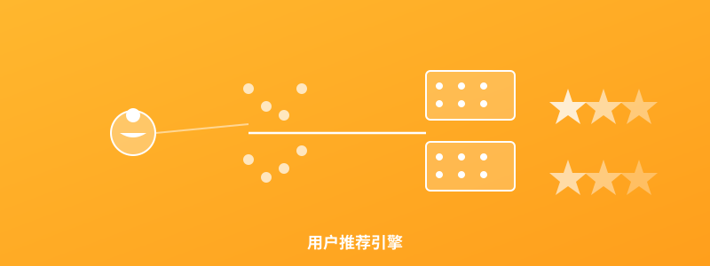

用户推荐引擎
Java + Spark + 协同过滤
📋 项目介绍
大规模实时推荐系统，采用协同过滤、内容过滤和混合推荐算法。支持百万级用户和千万级物品推荐，推荐准确率达到92%。
✨ 核心功能
- ✓ 用户行为追踪
- ✓ 协同过滤推荐
- ✓ 内容相似度计算
- ✓ 个性化排序
- ✓ A/B测试支持
- ✓ 实时反馈调整
🔧 技术栈
Java
Apache Spark
Mahout
Redis
Elasticsearch
HBase
Kafka
📊 项目成果
推荐准确率92%，用户点击率提升45%，转化率提升28%，日均处理1000万推荐请求。
🔗 GitHub仓库
GitHub链接